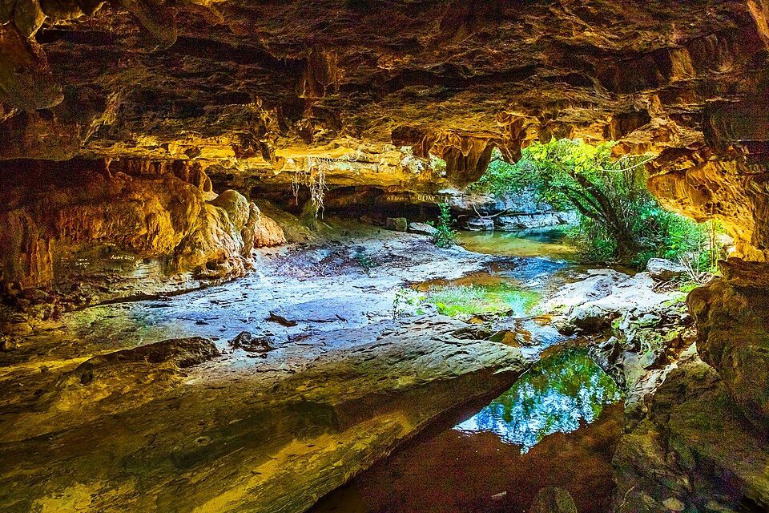
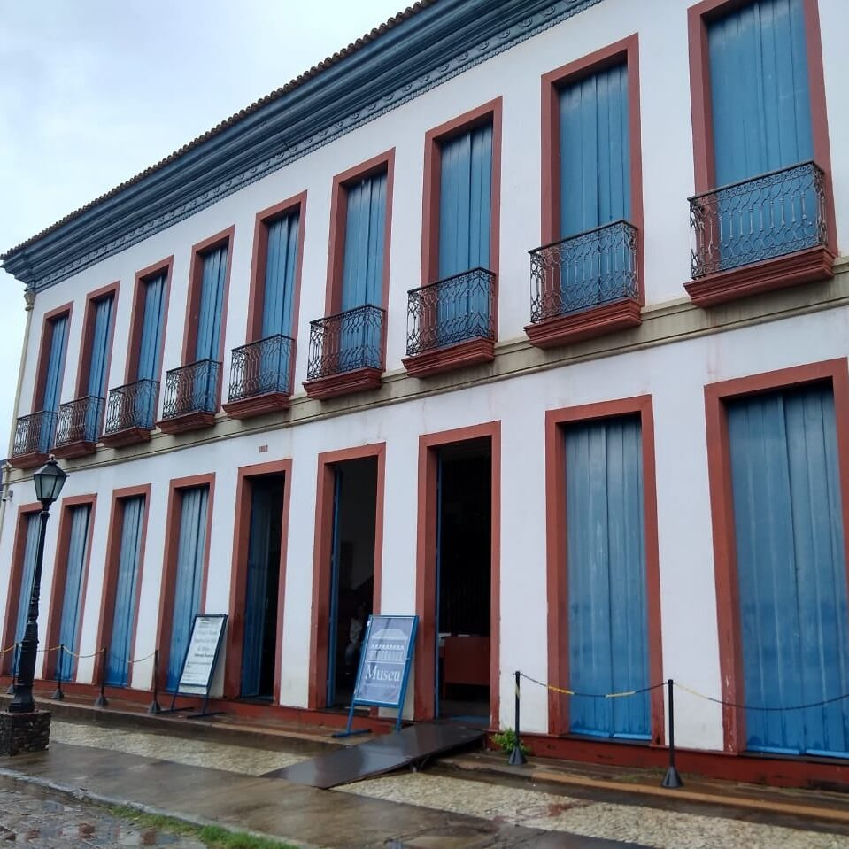

Montes Claros
Montes Claros é a quinta cidade mais populosa do estado de Minas Gerais, uma cidade conhecida por sua mistura encantadora de tradição, cultura e belezas naturais. Com clima quente, hospitalidade mineira e forte identidade regional, é um destino ideal para quem busca conhecer o interior do Brasil com autenticidade.
Lugares para visitar
Serra do Mel e Parque Estadual da Lapa Grande: perfeitos para trilhas, cachoeiras, grutas e contato com a natureza.

Gruta do Japão: atrativo natural com formações rochosas impressionantes.

Igreja Matriz de Nossa Senhora Aparecida e Catedral Metropolitana: pontos históricos e arquitetônicos da cidade.
Museu Regional do Norte de Minas: mostra a cultura sertaneja e indígena da região.
Mochila do Turista
Ao turistar em montes claros lembre-se sempre de estar preparado para tudo, pois é um local muito quente e com matas cheias de insetos caso opte por fazer uma trilha, tenha sempre com você: